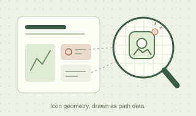
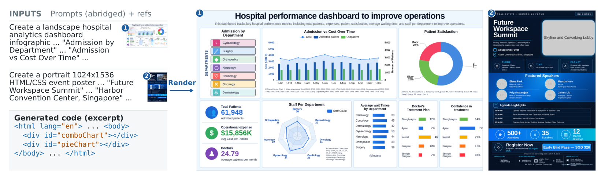
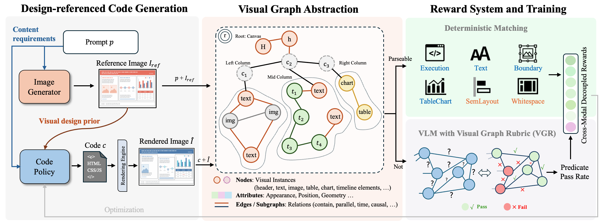
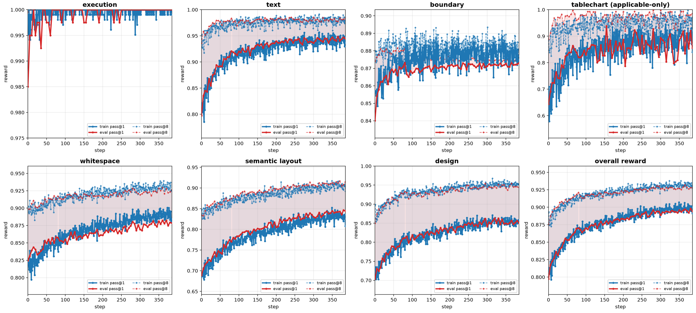
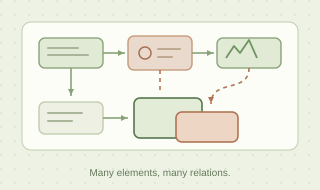
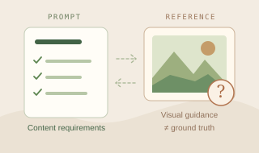

01 / ICONS
Icons are still hard.
Drawing an icon inline means emitting long stretches of SVG path data, which are difficult to get right and harder to refine.
OPEN MODELS · VISUAL CODE GENERATION
AesCode is a code generation model that learns visual design from references produced by image generators.
With this aesthetic guidance, it creates information-rich posters, slides, dashboards, and webpages as editable HTML & CSS.

THE SHORT FILM
The examples, the idea, and what we learned.
01 / THE WORK
Slides, dashboards, websites & posters.
A gallery of editable visual artifacts.
Why the gray boxes? We deliberately reserve photos and complex illustrations as semantic placeholders, and require charts to go through ECharts, rather than asking the code model to draw them. Both choices narrow the code action space so the model spends its capacity on the HTML and CSS it should own. Each placeholder keeps its role and position, to be filled in a later refinement pass by an image generator in the pipeline or by a human in the loop.
02 / INSIDE AESCODE
The prompt defines what to say.
The reference suggests how it could look.


03 / THE EVIDENCE
Competitive visual quality, with strong programmatic correctness. Measured on 300 infographic prompts, averaged over three generations per prompt, without selection.
Same reference-image setting. Full evaluations below.
AesCode Baselines All shown with reference images
04 / UP CLOSE
Content. Boundaries. Visual hierarchy.
Compare the details side by side.
Red outlines mark the source-documented issue regions.
A NOTE ON LIMITS

Drawing an icon inline means emitting long stretches of SVG path data, which are difficult to get right and harder to refine.

Dense spatial and logical relationships across many elements remain demanding at smaller model scale.

Reference images can contain hallucinated content. The model must learn their visual cues without copying their mistakes.
MADE TO BE EXPLORED. BUILT TO BE EDITED.
GENERATED HTML